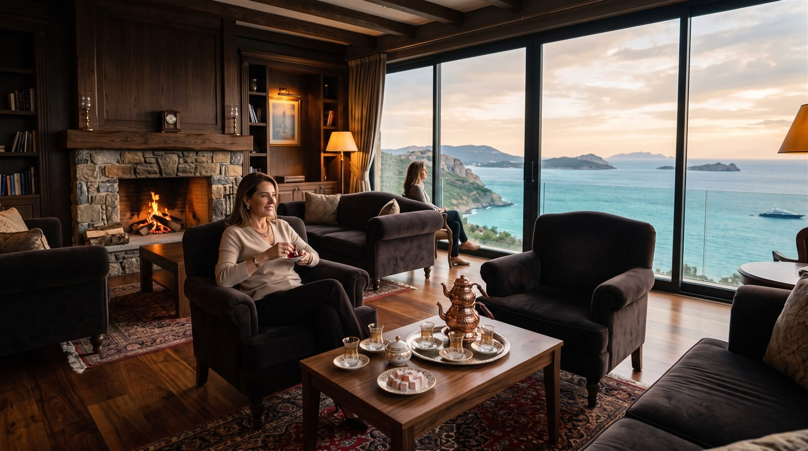

06 · VIP & Ayrıcalık
Görünmeyen Emek, Hissedilen Konfor3 alan
Siz gelmeden hazırlanan ev, kapınızda karşılayan ekip, telefonunuzdan yönetilen daire — ayrıcalık, ayrıntıda gizlidir.

VIP
Sessiz, manzaralı ve rezervasyonlu: özel ağırlama salonu.
VIP Lounge
Misafirlerinizi ağırlamak, özel bir kutlama yapmak ya da yalnızca sessizlik istemek için ayrılmış manzaralı salon.
 Ayrıcalık
Ayrıcalık
Siz yoldayken eviniz hazırlanır: havalandırılmış odalar, taze nevresim, dolu buzdolabı seçeneği.
Housekeeping
Her dönem girişinizde eviniz otel standardında hazırlanır; ayrılırken tek işiniz kapıyı çekmek. Ev sahipliğinin yükü bizde, keyfi sizde.
Resort Yaşamını İncele
 Ayrıcalık
Ayrıcalık
Aydınlatma, iklimlendirme ve güvenlik tek ekrandan; siz gelmeden daireniz ısınmış olur.
Akıllı Ev Sistemleri
Tüm daire ve villalar akıllı ev altyapısıyla teslim edilir. Yola çıkmadan iklimlendirmeyi açın; kapıda sizi hazır bir ev karşılasın.
Teknoloji Detayları
Görseller yapay zekâ destekli konsept çalışmasıdır; mimari temsil niteliğindedir, bağlayıcı taahhüt içermez.